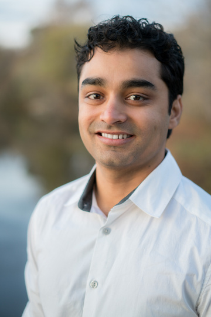

I am a computer-science teacher and software engineer.
Latest: I translated Allen Downey's amazing book called
Think Python into Marathi.
Click here for details.
Now you can self-study and learn Python programming in Marathi via this book!
More about me: Previously, I completed my Ph.D. in theoretical computer science (algorithms) from Dartmouth
College in 2017 and did two postdocs: for two years in EPFL and for 2.67 years at University of Vienna, where I
also taught algorithms and discrete math for 5 semesters. And even before that I worked as a software engineer
for about 4 years. I have always kept in touch with programming (even when I was doing theory).

Publications
-
Roeland ter Hoeven, Benjamin E. Niehoff, Sagar Sudhir Kale, Wolfgang Lechner
In Quantum Science and Technology, July 2023 Constructive plaquette compilation for the parity architecture
arXiv link -
Ashish Chiplunkar, Monika Henzinger, Sagar Sudhir Kale, and Maximilian Vötsch
In SODA 2023: Online Min-Max Paging
arXiv link -
Suman K. Bera, Syamantak Das, Sainyam Galhotra, and Sagar Sudhir Kale
In TheWebConf 2022 (Formerly, WWW): Fair k-Center Clustering in MapReduce and Streaming Settings
Link to paper.
-
Krishnendu Chatterjee, Monika Henzinger, Sagar Sudhir Kale, and Alexander Svozil
In ICALP 2021: Faster Algorithms for Bounded Liveness in Graphs and Game Graphs
Link to paper.
-
Monika Henzinger and Sagar Kale
In ESA 2020: Fully-Dynamic Coresets
arXiv link | YouTube link for my talk.
-
Ashish Chiplunkar, Sagar Kale, and Sivaramakrishnan Natarajan Ramamoorthy
In ICML 2020: How to Solve Fair k-Center in Massive Data Models
arXiv link | YouTube link for my talk.
-
Paritosh Garg, Sagar Kale, Lars Rohwedder, and Ola Svensson
In ICALP 2020: Robust Algorithms under Adversarial Injections
arXiv link. -
Sagar Kale
In APPROX 2019: Small Space Stream Summary for Matroid Center
arXiv link. -
Buddhima Gamlath, Sagar Kale, Slobodan Mitrović, and Ola Svensson
In PODC 2019: Weighted Matchings via Unweighted Augmentations
arXiv link. -
Buddhima Gamlath, Sagar Kale, and Ola Svensson
In SODA 2019: Beating Greedy for Stochastic Bipartite Matching
-
Sagar Kale, Sumedh Tirodkar
In APPROX 2017: Maximum Matching in Two, Three, and a Few More Passes Over Graph Streams
arXiv link | YouTube link for my talk
-
Amit Chakrabarti, Sagar Kale
In FOCS 2016: Strong Fooling Sets for Multi-Player Communication with Applications to Deterministic Estimation of Stream Statistics
ECCC link | YouTube link for my talk
-
Amit Chakrabarti, Sagar Kale
In IPCO 2014: Submodular Maximization Meets Streaming: Matchings, Matroids, and More
Journal version in Math. Program. 154(1-2) 2015
arXiv link
Personal
I like hiking and running (both mountain running and road running).I ran Sierre-Zinal 2019, which is part of the Golden Trail World Series, with 31km distance and 2200m of elevation gain, and finished in 5h22. Diploma.
{kind=link}
My best half-marathon time is 1h37 in Geneva Half Marathon in May 2018. Photo.
{kind=link}
Update: I beat this on 12 March 2023; it's now 1h36m09s. Hope to do a sub 1h35.
I have hiked extensively in Switzerland during my postdoc and in New England during my Ph.D. I am officially a member of the White Mountain Four Thousand Footers club (hiking highest 48 mountains in New Hampshire) and the New England Four Thousand Footers club (highest 67 mountains in New England). See this for more information. Photo NH48.
{kind=link}
पायथॉन विचार
शिका संगणक वैज्ञानिकाप्रमाणे विचार करायला
—मूळ लेखक: ॲलन डाउनी, अनुवाद: सागर सुधीर काळे.
This is a translation of Allen Downey's amazing book called Think Python into Marathi. Now you can self-study and learn Python programming in Marathi via this book!
हे पुस्तक मोफत उपलब्ध आहे. पुस्तक डाऊनलोड करण्यासाठी खाली लिंक दिलेली आहे. पुस्तकाचा नमुना ह्या पानाच्या एकदम खाली दिलेला आहे. पायथॉन प्रोग्रामिंग मराठीतून आणि स्वअभ्यासाने शिकण्यासाठी ह्या पुस्तकाचा तुम्हाला नक्कीच खूप फायदा होईल. पायथॉन ही अतिशय महत्त्वाची प्रोग्रामिंग लँग्वेज आहे जी प्रत्येक क्षेत्रात वापरली जाते. आणि फक्त पायथॉन प्रोग्रामिंगच नाही, तर हे पुस्तक तुम्हाला अल्गोरिदमशी संबंधित संकल्पनात्मक विचारसरणीसुद्धा शिकवेल. अशी विचारसरणी तुम्हाला एक उत्तम संगणक अभियंता किंवा संगणक वैज्ञानिक बनण्यासाठी अतिशय गरजेची आहे.
हे भाषांतर CC BY-NC-SA 4.0 लायसन्सद्वारे मोफत उपलब्ध आहे; म्हणजे तुम्हाला अव्यावसायिक वापरासाठी (उदा., शैक्षणिक वापरासाठी) हे पुस्तक वितरित करण्याची परवानगी आहे. तर ते जास्तीत जास्त लोकांपर्यंत पोहोचावे, विशेषतः ज्यांना ह्याची खरंच गरज आहे (गावांतील आणि लहान शहरांतील विद्यार्थी) त्यांच्यापर्यंत हे पोहोचण्याची संभाव्यता वाढावी, म्हणून कृपया तुम्ही ह्या वेबपेजची लिंक जास्तीतजास्त लोकांना WhatsApp फॉरवर्ड करा, ट्वीट करा, आणि इन्स्टाग्राम/फेसबूक/ब्लॉग इत्यादींवर नक्की शेअर करा. कृपया https://sagark4.github.io/think-python-2e-marathi/ ही ह्या वेबपेजची अधिकृत लिंकच शेअर करा, कारण ह्यावर सतत ताजी आवृत्ती असेल; pdf शेअर केल्याने ताजी आवृत्ती मिळणार नाही.
अनुवादकाची औपचारिक ओळख: डॉ. सागर सुधीर काळे ह्यांनी आय.आय.टी बॉम्बे (IIT Bombay), मुंबई येथून संगणक विज्ञानात एम.टेक. (M.Tech.) आणि अमेरिकेतील डार्टमथ (Dartmouth) कॉलेज ह्या Ivy league विद्यापीठातून अल्गोरिदम्स आणि कॉम्प्लेक्सिटी (Algorithms and Complexity) ह्या विषयामध्ये पीएच.डी. (Ph.D.) पूर्ण केली आहे. त्यांनी जगातील उच्च दर्जाच्या अल्गोरिदम्स विषयावरील परिषदांमध्ये १२ शोधनिबंध प्रकाशित केले आहेत. पीएच.डी. नंतर त्यांनी जवळजवळ ५ वर्षे संशोधनकार्य चालू ठेवले; त्यादरम्यान ५ सेमीस्टर्समध्ये त्यांनी अल्गोरिदम्स आणि संगणक विज्ञानातील गणित हे दोन विषय University of Vienna मध्ये शिकवले. सध्या ते व्हिएना, ऑस्ट्रियामध्ये एका क्वांटम काँप्युटींग (Quantum Computing) कंपनीत Quantum Compiler Developer म्हणून कार्यरत असतात. सविस्तर माहितीसाठी इथे क्लिक करा.
पुस्तकाची सध्याची ड्राफ्ट आवृत्ती डाउनलोड करण्यासाठी क्लिक करा. Click here to download the current draft version.
मी हे पुस्तक सतत अपडेट करत राहीन, तर सर्वांत ताज्या आवृत्तीसाठी हे वेबपेज तपासत चला. कृपया आपल्या प्रतिक्रिया आणि दुरुस्त्या पुढील इमेलवर पाठवा: think.python.marathi [ॲट] gmail.com.
CC BY-NC-SA 4.0 लायसन्सद्वारे, व्यावसायिक किंवा व्यापारी वापर सोडून, कोणत्याही प्रकारच्या आर्थिक नफ्यासाठी वापर सोडून, आणि लायसन्समधील सर्व अटींची पूर्तता केल्यास, इतर वापरांसाठी ह्या पुस्तकात बदल करण्याची आणि/किंवा ह्या पुस्तकाच्या प्रती बनवून त्यांचे वितरण करण्याची आपल्याला परवानगी देण्यात येत आहे. संपूर्ण अटींसाठी वरील लायसन्सचे इंग्रजीमधील स्वरूपच अंतिमपणे लागू होईल ज्याची माहिती पुढील लिंकवर दिलेली आहे: लायसन्सची लिंक.
ह्यानंतर, ओपन डेटा स्ट्रक्चर्स: opendatastructures.org ह्या पुस्तकाचे भाषांतर करण्याचा माझा विचार आहे. तुम्हाला हे भाषांतर वाचून त्याचा अभ्यास करायला आवडणार असेल तर मला वर दिलेल्या इमेलवर नक्की कळवा. संगणक विज्ञानाचा अभ्यास करण्यासाठी अजून काही उच्च दर्जाची आणि मोफत उपलब्ध पुस्तके म्हणजे
- Mathematics for Computer Science by Eric Lehman, F Thomson Leighton, and Albert R Meyer.
- Algorithms by Jeff Erickson
नमुना